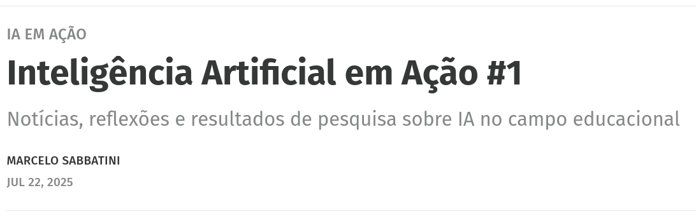

Ensino de história, história pública e divulgação num mundo de IAs
![]()
terça-feira, 18 de novembro de 2025

Acesse a apresentação
Parte 1: História pública digital na “virada digital”
NOIRET, Serge. História Pública Digital. Liinc em Revista, v. 10, n. 1, 28 maio 2015.
1.1 A virada digital em Noiret
- A virada digital na história:
- Reformula o tipo de documentação com que trabalhamos (digitização, nativos digitais).
- Transforma as ferramentas de armazenamento, tratamento e acesso à informação.
- Introduz novas questões epistemológicas, ligadas a big data e novas formas de narrar o passado.
1.1 A virada digital em Noiret
- Não há, segundo Noiret, uma metodologia sistemática consolidada para:
- Abordar criticamente as ferramentas digitais.
- Analisar o deslocamento dos “big data”.
- Compreender a nova capacidade pública de “trabalhar com o passado”.
1.1 A virada digital em Noiret
- Tudo isso altera profundamente:
- A relação entre historiadores e públicos.
- O modo como a história é produzida, mediada e consumida.
1.1.1. Relação com o público se transforma
- História digital (pública) torna-se forma dominante de presença do passado na sociedade.
- Historiadores disputam espaço com outras narrativas (memórias pessoais, mídias, algoritmos).
- Noiret defende que os códigos profissionais precisam ser:
- Reescritos, reinterpretados.
- Abrangendo novos modos de produzir e compartilhar narrativas históricas.
1.2 Web 2.0 e crowdsourcing em Noiret
- Passagem de uma web de páginas estáticas para plataformas interativas.
- Usuários como coprodutores de conteúdo (comentam, remixam, colaboram).
- A história pública digital se apoia em:
- Crowdsourcing: mobilização de “multidões” para produzir, indexar e comentar conteúdos históricos.
- Memórias pessoais, arquivos familiares, coleções locais que ganham visibilidade online.
1.2 Web 2.0 e crowdsourcing em Noiret
- A presença difusa do passado na rede:
- Questiona o monopólio interpretativo do historiador profissional.
- Coloca em tensão memória, identidade e autoridade historiográfica.
1.2 Web 2.0 ainda faz sentido hoje?
- De um lado, ainda existe:
- Produção colaborativa (wikis, fóruns, repositórios abertos).
- Por outro lado, vemos:
- Plataformização: redes sociais como jardins murados, com algoritmos que modulam visibilidade.
- Usuários transformados em fontes de dados mais do que em autores e produtores de conteúdo.
1.2 Web 2.0 ainda faz sentido hoje?
- Com a virada das IAs generativas:
- Tendência ao fechamento de dados (restrição de APIs, paywalls, proteção de bases).
- Conteúdos históricos passam a ser usados como treino de modelos, muitas vezes sem transparência.
- Ainda podemos pensar o público como “coprodutor” ativo?
- Ou estamos diante de um cenário em que o público é, sobretudo, fornecedor de dados para sistemas opacos?
- Quais os riscos para a história pública digital nesse contexto de “fechamento de dados”?
1.3 Impacto epistemológico da história digital
- Escala e quantidade
- Materialidade e estabilidade das fontes
- Narrativa histórica: novas mídias e fronteiras porosas entre texto e interface.
- Profissionais da história e o monopólio do passado.
1.4 História digital pública: pontos de atenção
- Transparência metodológica: como montamos bases, limpamos dados, treinamos modelos?
- Crítica de fontes digitais: quem produz, quem indexa, quem decide o que aparece?
- Responsabilidade pública: narrativas podem ser amplificadas, apropriadas ou distorcidas.
1.4 História digital pública: desafios centrais
- Combater anacronismos algorítmicos (modelos que projetam categorias presentes sobre o passado).
- Enfrentar o viés de sobrevivência digital (o que foi digitalizado x o que permanece invisível).
- Articular historiografia, memória social e infraestruturas digitais.
Parte 2: IA generativa, ensino de história e história pública
SILVA, André Luiz da. História e Inteligência Artificial: uma análise sobre as percepções de discentes sobre a automação da pesquisa e do ensino em História. Revista Diálogo Educacional, v. 22, n. 83, 9 dez. 2024.
2.1 Perfil e familiaridade
- 69 graduandos em História
- Formulário (jun–dez/2023)
- Maioria: 18–24 anos
- Predomínio de universidades públicas
- Conhecimento sobre IA: superficial
- Poucos com familiaridade avançada
2.2 Percepções positivas
- IA pode melhorar o ensino
- Apoia materiais interativos
- Ajuda a identificar dificuldades
- Contribui na digitalização e análise de dados
- Uso pedagógico visto como promissor
2.3 Tensões e limites
- Sensação de despreparo
- Forte demanda por formação em IA
- IA não substitui o professor
- Aceitação maior em tarefas burocráticas
2.4 IA, pesquisa e automação
- IA abre novas possibilidades de pesquisa
- Resistência ao uso como “fonte direta”
- Preocupação com erros, imprecisões
- Automação bem vista para tarefas repetitivas
2.5 Síntese: percepções dos discentes
- Otimismo pragmático
- Reconhecimento do potencial pedagógico
- Críticas: veracidade, dependência, atalhos
- Centralidade da formação e da ética
Parte 3: IA na prática do ensino de história

Eric Brasil | Entre em contato | IM1256 - Introdução à História Digital (PPGIHD/UFRRJ)